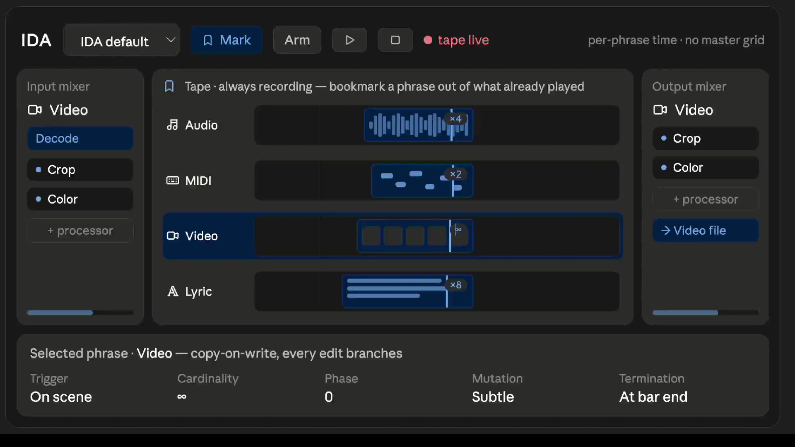

VectorSampler
A sample-player instrument built to play between an instrument's dynamic layers, not switch across them.
Nineteen projects · All of them in use
None of these started out as a product idea. I built them because I needed something that didn’t exist—or at least didn’t work the way I wanted it to.

Organic Tempo and Time Orchestrator. A four-player drum instrument that you play instead of program.

Idea Development Arranger. A way to capture, repeat, and develop musical ideas without getting in the way of the music.
A sample-player instrument built to play between an instrument's dynamic layers, not switch across them.

A scene-based loop station for REAPER. Switch scenes when you want, and the changes happen on the beat.

A macOS visualizer that turns live MIDI and audio into particles, notes, and other things you can actually see moving with the music.

A dark theme for REAPER. Because sometimes you’re still working after midnight.
These ideas started inside OTTO and IDA. I’m pulling the useful parts out so they can be used as standalone plugins, too.
The Vector effects engines from OTTO and IDA, packaged as standalone VST3, AU, CLAP, and AUv3 plugins.
A way for multisampled instruments to move smoothly between samples instead of jumping from one layer to another. Used in OTTO and VectorSampler, and available for licensing.
One compressor that moves continuously between eight classic compressor characters instead of making you choose from a list.
An algorithmic reverb built from measurements of real rooms, with the goal of making the math behave more like an actual space.
A distortion with a continuous range of character, from fuzz and grind through crunch and into warmer sounds.
A guitar amp and speaker model treated as one system, with the emphasis on feel and response rather than just dialing in a static tone.
An algorithmic take on analog tape for OTTO and IDA, with warmth, saturation, and the little bit of movement that makes tape feel alive.
Just The Facts. A different way of presenting news, with the rules for how it is handled out in the open.
A simple daily reader for A Course in Miracles, available on iPhone, iPad, Mac, and Apple Watch.
Darts scoring and game software with Bluetooth board support and real match statistics.
My musical duo with Marta Waterman. Visit the site →